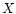
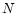
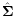
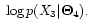

Subsections
Samples from a Gaussian density
Useful formulas and definitions:
Generate samples  of  points,
, with , coming from a 2-dimensional
Gaussian process that has mean
and variance
- 8000 for both dimensions (spherical process) (sample ):
- expressed as a diagonal covariance matrix (sample ):
- expressed as a full covariance matrix (sample ):
Use the function gausview (» help gausview) to plot the
results as clouds of points in the 2-dimensional plane, and to view the
corresponding 2-dimensional probability density functions (pdfs) in 2D and
3D.
» N = 10000;
» mu = [730 1090]; sigma_1 = [8000 0; 0 8000];
» X1 = randn(N,2) * sqrtm(sigma_1) + repmat(mu,N,1);
» gausview(X1,mu,sigma_1,'Sample X1');
Repeat for the two other variance matrices
and
.
Use the radio buttons to switch the plots on/off. Use the ``view''
buttons to switch between 2D and 3D. Use the mouse to rotate the plot
(must be enabled in Tools menu: Rotate 3D, or by the
 button).
button).
By simple inspection of 2D views of the data and of the corresponding
pdf contours, how can you tell which sample corresponds to a spherical
process (as the sample ), which sample corresponds to a process
with a diagonal covariance matrix (as ), and which to a process
with a full covariance matrix (as )?

- In process 1 the first and the second component of the
vectors
 are independent.
are independent.
- In process 2 the first and the second component of the
vectors
are independent.
- In process 3 the first and the second component of the
vectors
are independent.
- If the first and second component of the vectors
are independent, the cloud of points and the pdf contour has the
shape of a circle.
- If the first and second component of the vectors
are independent, the cloud of points and pdf contour has to be
elliptic with the principle axes of the ellipse aligned with the
abscissa and ordinate axes.
- For the covariance matrix
 the elements have to
satisfy
.
the elements have to
satisfy
.
- The covariance matrix has to be positive definite
(
). (If yes, what happens if not? Try it
out in MATLAB).
We will now estimate the parameters
and
of the Gaussian
models from the data samples.
- Mean estimator:

- Unbiased covariance estimator:
Take the sample of 10000 points generated from
. Compute an estimate
of its mean and an
estimate
 of its variance:
- with all the available points
- with only 1000 points
- with only 100 points
Compare the estimated mean vector
to the original mean
vector
by measuring the Euclidean distance that separates them.
Compare the estimated covariance matrix
to the original
covariance matrix
by measuring the matrix 2-norm of their
difference (the norm
constitutes a
measure of similarity of two matrices
and
;
use MATLAB's norm command).
In the case of 1000 points (case 2.):
» X = X3(1:1000,:);
» N = size(X,1)
» mu_1000 = sum(X)/N
-or-
» mu_1000 = mean(X)
» sigma_1000 = (X - repmat(mu_1000,N,1))' * (X - repmat(mu_1000,N,1)) / (N-1)
-or-
» sigma_1000 = cov(X)
» % Comparison of means and covariances:
» e_mu = sqrt((mu_1000 - mu) * (mu_1000 - mu)')
» % (This is the Euclidean distance between mu_1000 and mu)
» e_sigma = norm(sigma_1000 - sigma_3)
» % (This is the 2-norm of the difference between sigma_1000 and sigma_3)
When comparing the estimated values
and
to
the original values of
and
(using the Euclidean
distance and the matrix 2-norm), what can you observe?
- An accurate mean estimate requires more points than an
accurate variance estimate.
- It is very important to have enough training examples to
estimate the parameters of the data generation process accurately.
Likelihood of a sample with respect to a Gaussian model
In the following we compute the likelihood of a sample point
 ,
and the joint likelihood of a series of samples for a given model
,
and the joint likelihood of a series of samples for a given model
 with one Gaussian. The likelihood will be used in the formula
for classification later on (sec. 2.3).
with one Gaussian. The likelihood will be used in the formula
for classification later on (sec. 2.3).
- Likelihood: the likelihood of a sample point
given
a data generation model (i.e., given a set of parameters
for
the model pdf) is the value of the pdf
for that
point. In the case of Gaussian models
, this
amounts to the evaluation of equation 1.
- Joint likelihood: for a set of independent identically
distributed (i.i.d.) samples, say
, the joint (or total) likelihood is the product of the
likelihoods for each point. For instance, in the Gaussian case:
Why do we might want to compute the log-likelihood rather than
the simple likelihood?
Computing the log-likelihood turns the product into a sum:
In the Gaussian case, it also avoids the computation of the exponential:
|
 |
|
|
|
|
|
(3) |
Furthermore, since is a monotonically growing function, the
log-likelihoods have the same relations of order as the likelihoods
so they can be used directly for classification.
We can further simplify the computation of the log-likelihood in
eq. 3 for classification by
- dropping the division by two:
,
- dropping term
,
- dropping term
 ,
,
- dropping term
,
- calculating the term
in advance.
We can drop term(s) because:
- The term(s) are independent of
.
- The terms are negligible small.
- The term(s) are independent of the classes.
As a summary, log-likelihoods use simpler computation and are readily
usable for classification tasks.
Given the following 4 Gaussian models
compute the following log-likelihoods for the whole sample
(10000 points):
and
» N = size(X3,1)
» mu_1 = [730 1090]; sigma_1 = [8000 0; 0 8000];
» logLike1 = 0;
» for i = 1:N;
logLike1 = logLike1 + (X3(i,:) - mu_1) * inv(sigma_1) * (X3(i,:) - mu_1)';
end;
» logLike1 = - 0.5 * (logLike1 + N*log(det(sigma_1)) + 2*N*log(2*pi))
Note: Use the function gausview to compare the
relative positions of the models
,
 ,
and
with respect to the data set , e.g.:
,
and
with respect to the data set , e.g.:
» mu_1 = [730 1090]; sigma_1 = [8000 0; 0 8000];
» gausview(X3,mu_1,sigma_1,'Comparison of X3 and N1');
Of
,
,
and
, which
model ``explains'' best the data ? Which model has the highest
number of parameters (with non-zero values)? Which model would you
choose for a good compromise between the number of parameters and the
capacity to accurately represent the data?